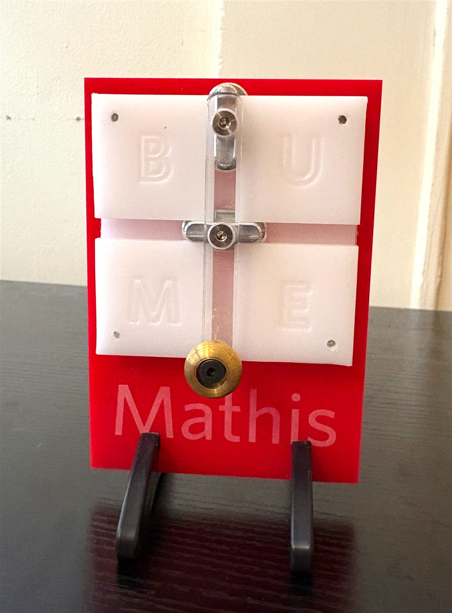
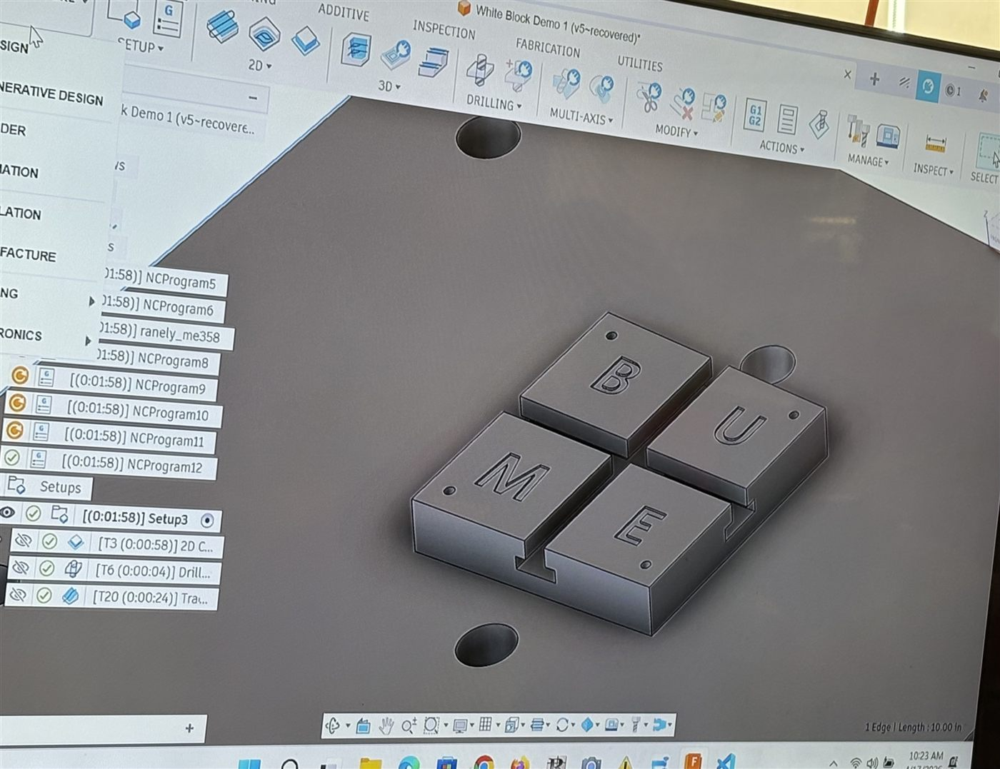
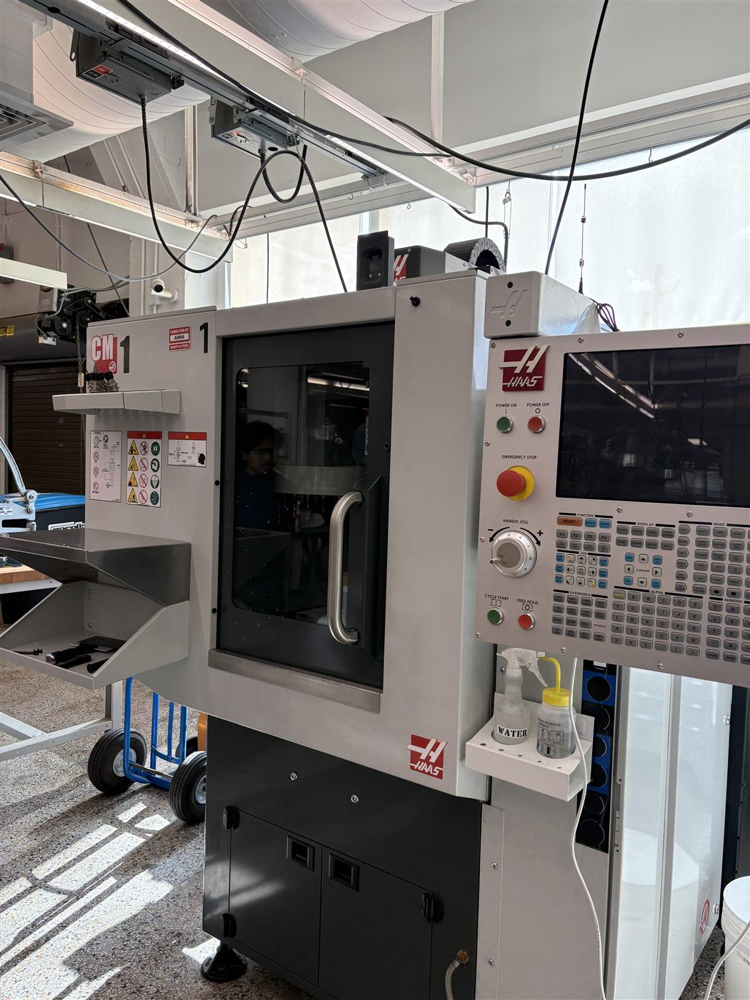
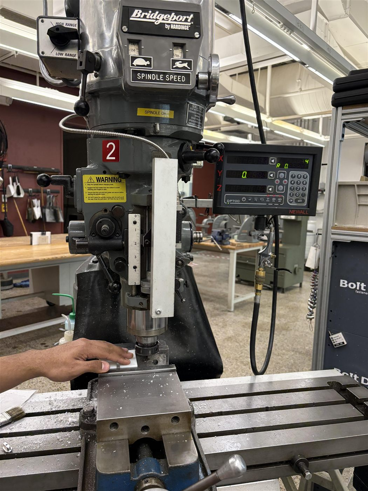
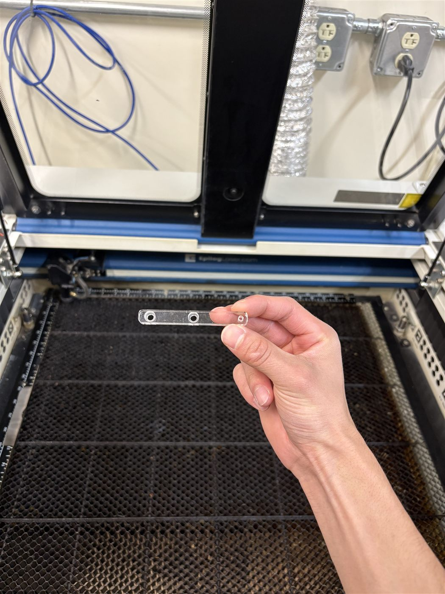
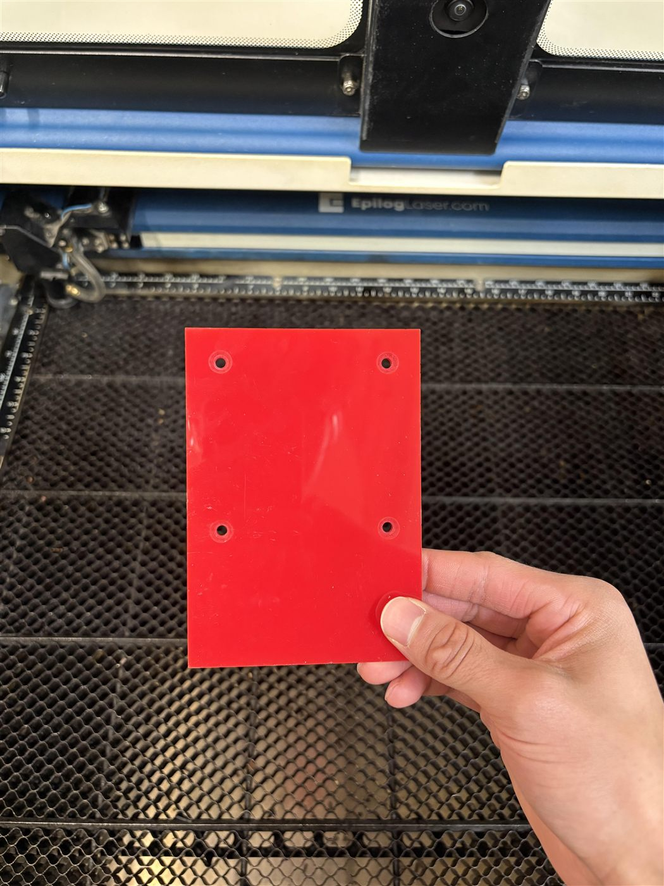
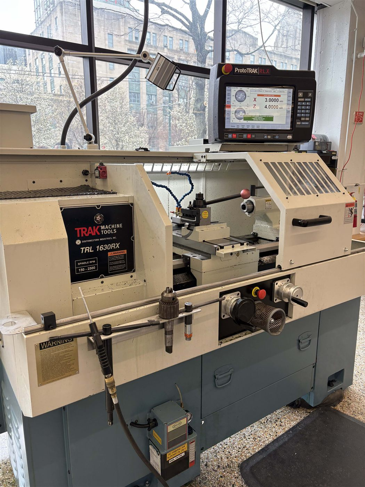
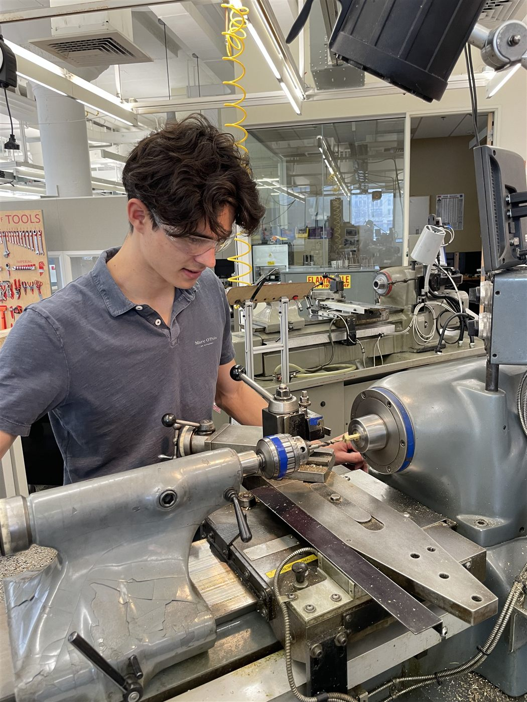

Spring 2026 · Machine Shop
Manufacturing at its Finest

CNC Milling
The white base
With Autodesk Fusion 360, the TAs of our Manufacturing course prepared a CAD model of an HDPE coaster plate for CNC machining. We observed the Haas CM-1 CNC mill machine the part, including engraving the "BU ME" lettering and spot drilling hole locations. This exposure with the CNC mill gave us an introductory experience of how a digital design is translated into a finished physical component.


Manual Mill
White plate slits
Next, I operated a Bridgeport vertical milling machine to cut the rectangular openings in the white HDPE plate — the slots that make the silver sliders glide smoothly when you rotate the handle.

Laser Cutting
White acrylic & red plate
Using CorelDraw, I prepared a design file to be laser cut on an Epilog CO2 laser cutter. I operated the laser cutter to engrave "Mathis" lettering onto the red acrylic plate and cut both the red and white acrylic pieces to their final shape.


CNC Lathe
Golden brass
The last step before assembling everything was crafting the golden knob. We used both the CNC and Manual Lathe. The CNC Lathe turned the brass down into a clean, round shape, and then on the Manual Lathe I drilled a hole through it so the knob could be screwed onto the acrylic handle.

